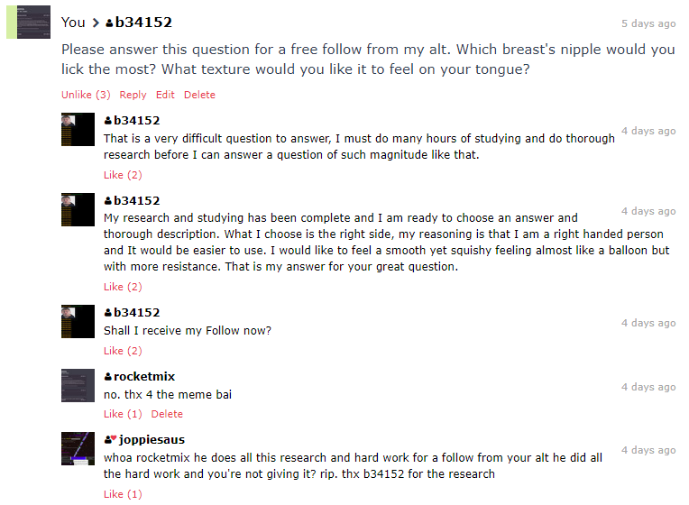
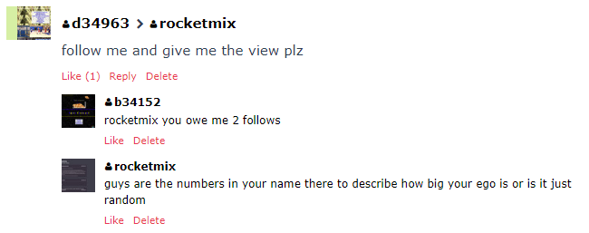
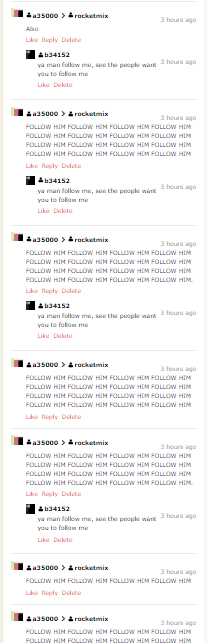

Rocketmix
See you later alligator, aka 2017.2017-12-31
So it's going to be the new year. 2018 looks promising and i'm a bit excited to see what happens. This is probably gonna be a short blog post (though when I say that it becomes normal length) so I might just say that we got 20k views! Pretty cool for me, this site is doing way better than previous sites I had, I almost have 100 followers! I'm moving a bit on from websites though (i'll still update the blog don't worry), I just want to do stuff. I'll be in high school next year, after this schoolyear. I'll see the friends I have at this school and some old school friends I've used to see. Though it does a bit kinda worry me if they'd be the same, even after high school. Anyways this is the last day of 2017, gotta be positive! (I was right, the blog post is now at normal length lol.) Welp, I'll see ya next year, cya later guys! :D
Merry (soon-to-be) Christmas!2017-12-22
Welp it's going to be christmas soon in a few days, I've been doing pretty good and can't wait for christmas! I guess as a gift I have created a new theme (check the sidebar) and Piethon! Which I will link to probably on the top bar. I know this is short but not really much happened, I'm just sitting here minding my own business. School's good, I'll see my friends next year (though I can talk to them on Skype and Discord (no I won't tell you my skype but my discord's Jacklack3#2439)). Welp, I'm gonna go, cya later guys! :D
New site update!/Halloween!2017-11-03
Heyo! So I updated the style today, you can always get the original style if you want. For some reason the javascript code isn't working to make it so it keeps the theme using cookies. help me out pls. Also I went trick or treating and got some candy, a cafe place was also giving free ice cream which was cool. I picked blue bubblegum but I should've gotten cotton candy because blue bubblegum actually has bubblegum in it, when I was just trying to eat the ice cream! lol. Welp that's basically about it, by the way. I'm pretty active on the Neocities community, so you'll see some posts from me a lot there. Actually wrote this after I did the end. We went to the high school to look around, it was drama and my friend got 10 bucks to play the improv game, I also did so. At lunch we used the money for ourselfs to get a yummy lunch. I actually wanna go to high school now, only doing the fun stuff that is lol. I know i'll probably get a "trust me m8, high school is hell, you don't wanna be here." message now... Probably someone like hosma will PM me saying what I assumed they would say. lol. Welp, that's about it...Anyways, cya later guys! :D
We're stupidly close!!!2017-10-30
The next day is Halloween! Yeah I'm going trick or treating for tha sweet (literally) candy. I'm going to be a penguin because 1. I love penguins. 2. Gives you the most treats. What are you guy's going to be? Post on my Neocities profile. Welp, cya later guys! :D (P.S we're gonna have a dance at school as well.)
Sidebar Update!2017-10-26
I added a sidebar to my site, I added links to my YWoT worlds, also give me a damn! By the way the Unoffical Neocities Discord server hit over 100 members! So i'm happy about that.
I'm starting to add more content to this site, I love how OwlMan's site has a whole bunch of content, hence why I start the articles thingy, which by the way it was also because I wanted to make an article about Simlish. Go check it out! lol
Today Super Mario Odyeesee (however you spell it) released for other countrys! I'm gonna be getting a Switch this christmas so that'll be sweet. Sadly I now have to get my "Spoiler Detector 9000" out now. lol Well i'm bored so i'm gonna probably work on the site, cya later guys! :D
abcdefghijklmnopqrstuvwxyz2017-10-18
abcdefghijklmnopqrstuvwxyz
How to get followers. 2017-10-07
Hey guys, so I'm doing blogs again. Also the people I talked about last blog are trying to get my email. But I never check my email and I can always block them. Anyways I do know that they read the blog before. So I'm going to teach them and all the Neocities community how to get followers.
Step 1: Make a really good website.
This is harder than you might think, you'd have to think outside the box and put a lot of effort into it. The website wouldn't be just a little hobby or thing you sometimes update. It'll be a project.
Step 2: Follow tons of people on the global activity page.
Here's some reasons why this works, it doesn't annoy anyone (that much, it does let everyone know you followed them.) because instead of spamming just one person to follow them. It'll leave the followed person the choice to follow you back. Also if they check out your profile they can see other sites and discover hidden small communties they never even knew existed! Also some websites might follow you because you followed them or they think your site is good.
That's basically how to get followers without annoying anyone that much. Thanks for reading and cya later guys. :D
To catch a really annoying person, actually not just one person but a whole bunch of people. Hell they might just be alts. 2017-10-04
Neocities is such a great platform, of how it combines webhosting with social community. However of course if you let the internet have freedom, they will abuse it.
It all started when a user by the name of b34152 start asking people to follow him. Probably some kid who just want's follows, not big deal. However this started getting bad. He would be asking random people spamming them to follow them. Now was this a troll? Might be. However I was able to shut them up a bit by messing around with them. 
My friend on the Neocities Discord Server said how when he described a nipple, he basically described a breast. Like how do you mess up on that? Also as you can see I "promised" a free follow, then when he asked where his follow is I said "no. thx 4 the meme bai". I even included a period to let him know that he won't get it.
Now that was probably a mistake, why you ask?
Now remember that I already said I wouldn't follow him, and instead of unfollowing me (I followed him to see his annoying posts to mess around with btw) and deleting his post, he decided to gain revenge. 
As you can see I did a noice roast (and got 6 likes btw, this will come in handy later) replying to their comments. Clearly I was messing with them. Also you can see there is more letternumber users on neocities then we thought. .png)
Here I asked why they ask for likes so much and he cries about how i'm "scamming" him. My boi Owlmans got my back. (thx bby)
Now you might think "rocketmix what kind of small tiny revenge is this?". Well I present to you, 
Over 2 pages of spam, asking me to follow them. Now while of course I could block them they got tired after a bit. However one thing I am mad about is because of this, everyone who follows me will see the spam. Seeing as the only way to make it go away is unfollowing me, they do so.
Now I only lost 1 or 2 follows but the fact that they removed the follows I earned so they can feed their big egos full of "follow for follow" follows sickens me. They shouldn't be thinking that this is the right thing to do.
However I think there is one thing we can do. We need to tell them "#EarnYourFollows". Go to one of these annoying people and maybe give them a good 1 or 2 posts saying "#EarnYourFollows". Together we can make Neocities great again save Neocities! Cya later guys...
y i amz leaiveng neocitys 2017-08-17
>hai evyb0dy 2day i am goin 2 tell u y i am leaveeng neocitys
3. itzz cheper lke surre i cann jast d0 it 4 fre cing az i no hosst crzy stufff on et but idc!!!!!!!!!!!! >:((((((
1. no ftp now i no tht cli existz but my fingrs hve been braken becuz i hve to drg nd drop!!!!!!!!!!1 u miehgt say "roketmex how r u supaosed 2 uplod" wel u hve to drg and dr oop like wtf i thught makeng a sitee waz suposed to b not harrd like wtf i actualy hve 2 putt worark in2 my sittee???/ wtf neocitys
2. zeh comuni2ee isnet dat greazt, liake illl b stalkning paoples sietes giaving persaonal inf4matin abut othhaer peoaplez siteees nd il c thre are tramp sitz nd vpareare sittess lik wtf i didnot wnt thisss 2 b a fred0m of speeeech nd webb freeadom site wtf
dnt wry i wnt b deletitn mai siate ill justst us it az ann advrrrtasiment anywayz bai
a poem i maide 2017-08-13
rosez r red
voilats r blue
aaaaaaaaaaaaa
aaaaaaaaaaaaa
I RAN OUT OF IDEAS FOR TITLES!?! (CAN'T DECIDE!?!?!?!?) 2017 keygen unpatched 2017-08-11
Hey guys, so my friend came back to Neocities and later made a review about my site, Go check out his site. Anyways I did another kool prank shortly after I made the post yesterday. Pretty bored right now as there's not much to do. Kinda can't wait for school tbh as I'll get to see my friends, and the teacher is actually a bit funny. I mostly get female teachers but this is a male teacher. (before you get your panties in a twist it's not like i think they're good only because the teacher's a male, i've talked with him before so calm your emulators or something idk what the kids have these days but i'm a kid so i should know- okay imma stop lol) Anyways I think I might leave it here and browse on Neocities. Anyways cya later guys! :D ( ;) )
prankz 2017-08-10
check out this sick cool prank m8.
A non-meme blog! 2017-08-09
Hey guys, so a lot happened recently! One of the members in the Neocities Discord Server suggested to post to /r/discordservers. I decided why not and we got like 5 members in one day! I mean one left after 10 minutes but the rest stayed and two even made a neocities account! So I think it's doing pretty good. Invite your friends who are Neocities users or want to make a website using this link; "https://discord.gg/GpnED8V". Anyways today I built a wall on my bed using blankets and pillows and I am proud of myself! lol Anyways I think i'm gonna leave it here so cya later guys! :D
what duck does a sound make? 2017-08-08
pretty barks it sure
pretty sure it barks 2017-08-07
Hey guys, i'm just a bit bored. The Neocities Discord Server is growing a bit! I already said this but now instead of inviting on Neocities users, you can also invite people who just want to have their own website! Because I made a #joining channel where new people can get help to start out making their own Neocities site. So ask your friends if they ever wanted a website and show them Neocities and the server. I'm thinking of making a quiz game in Python. I got a getch module working and made it how I wanted it to be. To test it I made a loop and made it print every key I pressed but it had this b'(key)' thing. (replacing key with the key I pressed) but I was able to fix it. I might also make a blog maker, that could work. It's just the problem is this is more easier to edit. If I make a mistake I can easily edit it, and I know i'll just come here anyways. Well actually I could use CLI but that doesn't matter! lol Welp anyways i'm gonna go, cya later guys! :D
what sound does a duck make? 2017-08-06
i dont know
weeeew 2017-08-05
Hey guys, so I updated the Neocities Discord Server! I also hired a few helpers, well not really hire. More like pick them, lol. Anyways remember that word stat stuff I was talking about? Well I finished 1.0 and it's now on github! :D So check it out! Anyways updating the Neocities discord server was a bit fun. I made it more better and even added a channel for users who aren't apart of Neocities can gain help from Neocities users to make their website. That's all I have to talk about, I actually can't wait for school, the teacher we're gonna get is pretty cool and I miss my friends :o. Anyways cya later guys! :D
Python 2017-08-04
Hey guys, so I been learning a bit of python! I made a fizzbuzz program (using tom scotts way) and I also made a word stats program! Well you don't have to actually type in a word you can type in anything. Anyways i'm pretty bored and getting late to make these, I actually forgot to make this until I went on neocities to check it out. I don't really know what to talk about right now... Maybe I should say you guys should join the Neocities Discord Server! I think the server would be more fun with members, we actually do have some active members. You can even get to know Project2's project he's workin' on. So yeah, I think i'll probably end it here, maybe play some Miitopia. Probably not. Anyways cya later guys! :D
Sorry I missed a day. 2017-08-03
Hey guys, sorry I missed a day, I forgot about it and when I did I had to go out, then I forgot when I was back home. But that's okay, you guy's can go a day without a blog right? Probably, in fact you can probably go forever without this blog, but I think some people read my blogs. Strata, a nice neocities user joined my server around the time I made the blog post below. If you are an active reader of my blogs then thanks. ;) I *just* got a message from Palutena, (I'm gonna call him Palu from now on, or Project2,) and he asked why I didn't post yesterday, so I guess a few people read these. Maybe i'm breaking the fourth wall lol. By the way, I might add a comment box to the contact page. Speaking of which, I still need to add other pages, but there really isn't projects that i'm that proud of. Besides the Youtube URL word seeker. And maybe the freewarez page, I haven't linked to it but basically when your friend leaves the computer, you'd go to the page, disable blocking of pop ups and voila, have your friend come back with 500 windows on their screen saying Congratulations you won! with that saying playing 100 times at once. However, I wouldn't do this if they haven't saved their stuff, I worked on the project on the school computers since my computers slow and would have a heart attack if I worked on it and it can lag like hell. I ***think*** it even blacked screened on me but i'm not sure, don't quote me on that. Anyways I think I might just go, oh by the way I played more Miitopia and my friends got kidnapped and I got my powers removed so now I have to get them back. The World 1 battle music is god like and makes me want to hug my 3DS lol. Anyways cya later! :D
Another month! 2017-08-01
Today is the first of august, now this month is actually when my birthday is! It's on the 31st so that's cool. Anyways sorry for the late blog post, I been feeling pretty lazy. However a few of my friends might do blogging, or they might do blogging again. I'm pretty bored and I'm just surfing on the net playing video games. This might be the shortest blog post yet, I don't know. Maybe I should end it here? Would be pretty boring to read, I'm not sure. Maybe I can make this a bit longer by telling you guys to join my Neocities Discord Server! Yeah I know some of you don't like plugs, yeah. I said yeah twice because the first "Yeah" didn't look look like I spelled it right. I don't know, man, a lot of I don't knows. Probably because there's nothing to talk about, like the last blog post. Well there probably will be because in this month i'll go go-karting and go to the zoo and whatnot, that'll be fun. You know ever since my two good friends designchoices and nintel left it's been pretty boring. Nintel left because of the ""drama"" and didn't want this to continue, which is fine. But designchoices just thinks i'm annoying, which honestly I agree with. I try to pretend everything is a drama tv show and i'll try to be the superhero when there is no problem what so ever. Eh, well I think i'll just leave it here and play some video games. Cya later guys! :D
oh boi. 2017-07-31
When I had my old accounts and had blogs on them I went out of them because they got boring to do. I'm starting to get that but it's more worse, before I didn't know how big the community was and thought I only knew 1% but now I realize everybody on my activity page is almost everyone active. You might think why do I follow a whole bunch of a people, even random people. I go to the global activity page and follow them because I want to have my homepage active. (Also you can get followers this way lol) And I find that more and more people are leaving, even my friends which is sad. And Krazten (I believe that's how you spell their name, sorry.) has said, which I agree with is that Neocities needs to advertise more. Wanna know how I discovered this place? I kept digging and digging, searching deep for a web host and then I found this site. You might think what's wrong with that? But I tried lots and lots of web hosts, some in the future today are better and maybe a bit more better than neocities. But i'm not everyone, not everyone is gonna dig deep and go to the 20th page of google results to find a web host. The only reason i'm sticking to here is because of the community part, at least with Neocities it WANTS your site to get views, they try to make the supporter plan a "supporter" plan, I can prove this by reminding you when Neocities upgraded free members to 1GB. But perhaps we need to work for Neocities ourselves, maybe we just have to be like other social network's audience and advertise, tell our friends, tell strangers about Neocities. Then Neocities might remove the supporter role, they might add stuff we want, hell in that case since it's open source we'll add stuff we want. But how do you do this? Well I want you to go to one of your friends who has a bit of want for a website and tell them about Neocities. Tell them how you can have communitys, it's like a social network, your site gets views. You can learn programming, heck they have a fricking comic to learn HTML using. But anyways, lol I was able to get kaeru:world and sudomemo to work (google those if you love flipnote studio (3d)) and it's pretty fun. While it's not like watching old flipnotes it somehow gives me nostalgia of spending hours watching flipnotes and youtube videos of people recording flipnotes with their crappy potato for a camera and dsi speakers playing. I thought theater was useless, lol. But yeah, I haven't been playing much of Miitopia, don't get me wrong it's a fun game but for some reason it was like switch, i'm just not playing it. Speaking of switches i'd like to get one and the homebrew scene is starting to rise up like never before onto the switch. They dumped the kernal for crying out loud! (They dumped the kernal, they didn't edit.) And it's only been like 4-5 months since it released! That's crazy. Welp I wrote probably the biggest blog post ever so cya later guys! :D
I love DSiware. 2017-07-30
Sorry guy's for the "late" (I don't even know if it was late) blog post. I didn't really know what to talk about but I was on my 3DS's homemenu and remembered that DSiware existed. I love DSiware, I like the charm of it and how it was just a little small game that would cost like one dollar. It sucks that Nintendo shut down the server that hosted them, but I hope people were able to get all the roms for basically all of them. By the way I couldn't find the URL for the guestbook so it's just there, I don't know. lol It's in my bookmarks somewhere. I'm trying to make this blog post at least a couple lines long, I mean the font size will be bigger so yeah. Uhh, I might actually leave it here and play some Miitopia later. That game is actually pretty fun, I made the evil dark lord just a tiny face so it's pretty funny seeing this scary evil dark lord named Quagonus which has a really tiny face with only 2 dots and a line. Anyways, cya later! :D
Site update! 2017-07-29
You're probably amazed with the CSS, but this was actually my friends custom theme for my site. I just edited it, if you wanna check them out check the footer below. (Yes I got permission to do so, we're actually friends :) ) I like the style of it and I hope you guys like it too. Strata said that I need a flag, now i'll be honest I didn't know what they mean't but after looking at their site now I know what they mean. So I got one in my footer. Also yesterday I got Miitopia and it was really fun to play! It does get a bit repetitive but I wasn't really going with the story part yet, I was more just exploring other places. By the way, I was wondering if you guys would be okay if I wanted to make multiple blog posts in a day? Like if I wanted to talk about something. Perhaps I could have a #2 or something where the date is. By the way, I'm currently working on the guestbook, once that's done i'll make a link here so you guys can mess around. Also I make a link to the Neocities Discord Server, but as I said in the past Project2 is the one who I assume gets us members, but that doesn't matter. Speaking of the server, if you guys enjoy it and wanna see more members please share it, I'll actually see if I can make a 88x31 banner for it. I might make it a bit like mine, since I just use a banner generator to make it, lol. Man, thinking about the website brings me memories when I was super happy that I reached 10K views on coolman, or when I was featured on Project2's blog (sorry palutena, kinda hard to spell your name) that was pretty cool, I guess I was actually featured twice because I was in my new account and even Project2 said that lol. The toast I am eating for breakfest has a hole in it, how do does even happen? I guess it will stay as the questions we may never know the answer to. Well anyways I think i'm going to work on the site or the guestbook, so cya later! :D (might also play miitopia lol)
:'D 2017-07-28
You might be wondering why I put a emoticon as the blog title, that's because the emoji movie releases today! Now i'm not actually hyped for it, i'm just doing that for the meme. I wonder what jacksfilms is gonna do about that, speaking of jacksfilms, pretty cool how he got 3M subs, in 11 years... Anyways, i'm pretty bored. I might update the site, maybe add more pages and make the nav bar into a js file. The neocities user lkewise or ikewise, I think ikewise made a tutorial for having navbars that you just need to update one file, so i'll probably do that. I'll also probably make a page for the Neocities discord as the only way to get in right now is Project2's sites. Speaking of which is pretty cool he's in the server. Now when I say Project2 I mean Paletuna or however you spell their name lol. Also, Miitopia is gonna release today, I love games that are like that, where the games are based soley on your characters. I also heard that you can get your Tomodachi Life characters and transfer them in the game. I thought that was really cool. I just hope Miitopia still has replay value unlike Tomodachi Life, yeah it's pretty cool but after a while it gets really boring. Maybe they should've made it like some planet or something. But maybe Miitopia will be the game that replaces everything. Also since you use Mii's, you could make a evil burger, lol. That's one of the things I like about Mii's is that Nintendo made Mii's so edible, not in a eating way lol I mean in a edit-able way. Well, I think that's gonna be all for today, it's 8:58 AM anyways. So, cya guys! :D
The second blog. 2017-07-27
While I was typing the title for this I noticed I made a typo on the blog title for the first entry, I fixed it. It siad 2017-07-06 but I changed the 06 to 26. I woke up at 7 AM and listened to a podcast and went to sleep, I woke up at 8:50 AM and it's 9:12 AM as I'm writing this. I'm probably gonna update the site after I finish writing this as i'll have more time to do so. I don't think this blog entry is gonna be as big as the first one but I don't know. Probably because I just woke up and I don't really know what I'm gonna do through out the day. I might actually just leave this and then write it more as I just live this day. UPDATE: Well, this isn't really a update, but doesn't matter. Anyways I haven't really done anything with the site right now, probably when I'm done writing this blog post, that's why I updated it anyways lol. I might actually end it right now, so i'll uhh, cya later guys! :D
My first blog entry! 2017-07-26
Welp here I am, making the first blog entry. I'm too lazy to work on the site right now so it's just really basic HTML right now. So I guess for the first blog entry i'll introduce myself. I'm rocketmix aka Jacklack3. I am a loyal friendly guy and I like to make people laugh. Here i'll post projects I made and maybe make a blog entry once in a while. I'm assuming if this site gets a bit big people might wanna start from the beginning or just look back at the first post, if so then hello there! If you are just reading this because this is the only blog entry or very close to that then hello as well! I know my friends have a dreams blog but I don't have alot of dreams. I can say one where I was in my bathroom and it was dark and futuristic, and there were like 10 squares above my sink, they had a blue outline and a dark inside with a orangey yellowey coloured didget inside. I think there might've been arrows to press that were red but I think that's just my mind, I forgot what happened after that. Anyways I can't wait to work on this site, well I can wait and that's what I been doing since i'm too lazy to work on it. I might work on it right now, the design i'm thinking of is easy to do anyways. I used to be galaxycat but the site sucked, I even asked a reviewer to review my site and they said it sucked, I was actually agreeing with them. Anyways maybe I should stop writing this blog. I'll probably work on the site right now, it's 7:17PM right now as I look. Welp, cya later guys!.


{kind=link}